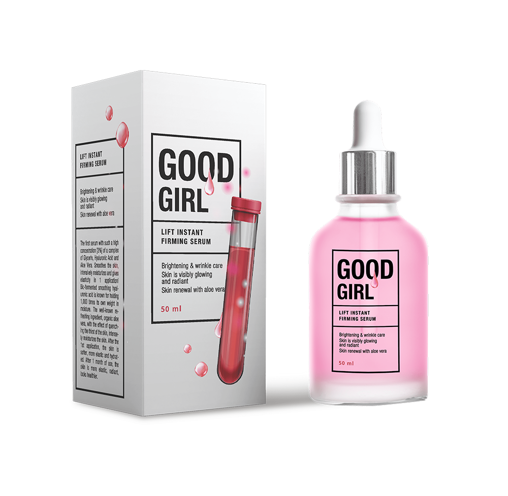

في 3 ديسمبر، 2020، حدثت حلقة مضحكة في العراق . خلال حفل الزفاف، رأى العريس الشاب جواز سفر زوجته المستقبلية لأول مرة وقام بعمل مشهد. اتضح أن المرأة بلغت 64 عامًا هذا العام. فاطمة كانت تخفي عمرها لمدة عام، وتقول لأحمد إنها تبلغ من العمر 29 عامًا فقط. بدا وجه المرأة وجسمها صغيرين جدًا، حتى إن الرالمصل لم يدرك أنها كانت أكبر منه بمرتين.

بفضل هذه الحادثة، تعرّف مئات الآلاف من الأشخاص على منتج تجديد نضارة البشرة الجديد والأكثر فعالية الذي تم ابتكاره داخل العراق
إليكم ما قاله أحمد عن هذا الموقف:
لا يمكنكم تخيل مدى صدمتي عندما عرفتُ العمر الحقيقي لفاطمة. بعد كل هذا السنوات، تبدو في الثلاثين من عمرها، لا أكثر! لم يكن لدي أي فكرة أنها يمكن أن تكون أكبر من ذلك بكثير. لقد تواعدنا لمدة عام كامل وكنت سعيدًا وأحبها. لكن عندما رأيت جواز سفرها في حفل الزفاف، شعرت بصدمة شديدة لدرجة أنني بدأت بالصراخ في وجه فاطمة، ثم هربت للتو.
ظللتُ يائسًا لأكثر من شهر، ولم أكن أعرف ماذا أفعل. لكني أدركت بعد ذلك أن عُمر فاطمة هو مجرد رقم في جواز سفرها. وإذا لم أركز في هذا الرقم، فسأدرك أني ما زلت أحبها. إنها رائعة المظهر فحسب، بل إنها أفضل بكثير من العديد من الفتيات الصغيرات. فلماذا كنت أشعر بهذا القلق الشديد إذا لم يتغير أي شيء؟ إذن، عندما ذهبت عني الصدمة، ذهبتُ من فوري إلى فاطمة، وقلت إنني أسامحها وتقدمت لها مرة أخرى. لقد تزوجنا وانطلقنا في شهر العسل والآن ننتظر مولودنا. إننا نشعر بسعادة غامرة!
لقد اندهش طاقم التحرير لدينا من هذا الموقف، وقررنا إجراء مقابلة مع فاطمة
المراسل: مرحبًا فاطمة! من فضلك، أخبرينا لماذا تبدين صغيرة جدًا ولماذا أخفيتِ عمرك الحقيقي عن أحمد؟
مرحبًا، هل تصدقني إذا أخبرتك أن عمري 64 عامًا؟ (تضحك). سيبدو الأمر أكثر غرابة. بعد كل شيء، أنا لا أبدو حتى في عُمر الأربعين بسبب وجهي وبشرتي. وأنا لا أتحدث حتى عن عُمر 64 عامًا. لهذا عاهدتُ نفسي بألا أخبر أحمد الشاب الوسيم عن عمري عندما التقيتُ به. لم أرغب في صدمته، لأننا كنا نعمل بشكل جيد.
المراسل: أجد صعوبة في تصديق أنك تبلغين من العُمر 64 عامًا. أرى أمامي فتاة جميلة تبلغ من العمر 35 عامًا بحد أقصى. كيف حدث هذا؟ من فضلك هلا أخبرتينا بالمزيد.
هل تعلم أنني انفصلت عن شريكي السابق منذ 12 عامًا. لقد كان عمري 52 عامًا بالفعل وانفصل عني من أالمصل فتاة أصغر وأكثر جمالًا. طفقتُ أعاني من اكتئاب حاد لمدة عامين بعد انفصالنا. وصف لي الأطباء مضادات الاكتئاب، لكنني لم أتمكن من العودة إلى طبيعتي.
ثم قررتُ أنني سأثبت لنفسي أنني امرأة وجديرة بأن أكون صغيرة وجميلة مهما كان عُمري.
لقد بدأتُ بإنفاق كل أموالي على العديد من منتجات التجميل التي يتم الإعلان عنها على شاشات التلفزيون في ذلك الوقت. لكن لم يفلح أي شيء من ذلك. ثم بدأت أخضع لدورات علاجية باهظة الثمن في عيادات التجميل في العراق. ولم يفلح ذلك أيضًا. ثم أدركت أنه لا يوجد شيء أفضل من محاولة تحديد تركيبة المكوّنات الطبيعية لنفسي وفهم ما الذي يعمل بشكل أفضل أو أسوأ. أنا صيدلي أبلغ من العُمر 30 عامًا من الخبرة، لذا لم يكن من الصعب بالنسبة لي إنشاء صيغ مختلفة من الأعشاب والنباتات وتجربتها على نفسي.
المراسل: مثير جدًا للاهتمام، هل نجحتُ حقًا؟
كما ترون من وجهي - نعم نجحت. (تضحك). لأكثر من 3 سنوات، كنت أجرب تركيبات مختلفة على نفسي، لكن إما لم تكن هناك نتيجة، أو أنها كانت تافهة للغاية. لكنني لم أكن لأستسلم وعندما بلغت السابعة والخمسين من عُمري، نجحتُ نجاحًا مبهرًا لا يصدق. كالعادة، بدأت أستخدم تركيبتي التالية، وبعد 7 أيام بدأ أصدقائي يلاحظون أن وجهي بدأ يتغير. لم أفكر كثيرًا في ذلك الوقت، ولكن بعد 30 يومًا من استخدام تركيبتي الجديدة، لم يتمكن أصدقائي وعائلتي من التعرّف عليّ!
فقط تخيلي أنكِ قمت بزيارة مصففة شعرك للحصول على قصة شعر كالمعتاد، وبدلاً من إلقاء التحية عليك، يدفعك بعيدًا عنه بكل اشمئزاز وبعيون مليئة بالرعب. لقد كانت قصة مضحكة جدًا فقط بعد أن أظهرت لها جواز سفري، اعتقدتْ أنه أنا. ما زلت أتذكر عينيها المصدومتين وعبارة: "لا يمكن أن يكون هذا حقيقيًا، قبل شهر فقط أتت إليّ امرأة عجوز مسنّة بعيون حزينة، والآن أرى فتاة شابة يافعة وجميلة وعيناها متوهجة من السعادة. هل هذه مزحة؟"
لكنها لم تكن مزحة. ففي ذلك اليوم، أدركت أنني تمكنت من صناعة شيء قيم وضروري للغاية بالنسبة للناس. في ذلك الوقت، كتبت أكثر من اثني عشر رسالة إلى عدة مراكز بحثية في العراق وشركات أدوية، لكن كانت هناك بعض المفاجآت.
المراسل: ما المفاجآت؟
بالتأكيد قامت جميع الشركات بإرسال رسائل نصية لي وعرضت مبلغًا كبيرًا جدًا من المال مقابل تركيبتي. لكنني فوجئت جدًا عندما أخبروني أنهم سيبيعون منتجي مقابل ! ثم شرحت أنه في تركيبتي، يمكن الحصول على جميع المكونات من النباتات التي تنمو على أراضي العراق وبالتالي سيكون الإنتاج وفقًا لتركيبتي رخيصًا جدًا. أخبروني أنه لم يعد من شأني وأنهم سيبيعون منتجي بالقدر الذي يريدون.
المراسل: و ماذا فعلت؟
أعتقد أن منتجي يجب أن يكون متاحًا للجميع. لذا، رفضت بيع تركيبتي وقررتُ مزاولة عملية الإنتاج بنفسي. لقد حصلتُ على قرض كبير من أحد البنوك، وظفنا أفضل الصيادلة في البلاد وأعدنا إنتاجنا. مما سمح لنا ببيع منتجنا ليس مقابل ، بل فقط مقابل . اسم منتجي هو - . آمل حقًا أن يجعل هذا السعر المنخفض، الذي تمكّنا من تحقيقه من خلال الإنتاج الخاص، منتجنا متاحًا لمعظم المواطنين في العراق وأن يخوضوا نفس تجربة السعادة التي عايشتها من قبل. السعادة بحياة جديدة وحب جديد والشعور بأن شخصًا ما لا يزال بحاجة إليكِ بينما أنتِ في عُمر 64. يحتاجك بشكل حقيقي
المراسل: هذا محل تقدير لدينا! لقد خاطرتِ عندما حصلتِ على قرض كبير في البنك. هل قمتِ بدفعه بالفعل؟
لسوء الحظ، لم أدفع القرض بعد، ووفقًا لتوقعاتنا، مع هذا السعر المنخفض البالغ ، سيتعين عليّ تأجيل سداده لمدة 4 سنوات أخرى. لكنني على استعداد لتقديم مثل هذه التضحيات، رغبتي الملحة هي مجرد تقديمها أكثر في متناول مواطنينا. بعد كل شيء، أنا امرأة بسيطة مثل معظم الناس الذين قرأوا هذا المقال، وكان لديّ الكثير من الأشياء السيئة في حياتي. بغض النظر عما يقوله أي شخص، لكن المظهر لأي امرأة هو جزء لا يتجزأ من سعادتها. لذا، فمع تقدم العُمر، علينا أن نحافظ على جمالنا السابق بكل الطرق. وبعد أن ابتكرنا مثل هذا المنتج المذهل، يمكننا أخيرًا التوقف عن محاربة التجاعيد وترهل الجلدية، لأنه يمكن أن يجدد بشرتك، مما يجعلها تبدو 20-30 سنة في 30 يومًا فقط . أريد أن أقول إنني الآن أبلغ من العمر 64 عامًا وأنا سعيد جدًا، ولديّ زوج شاب وسيم، وأنا بالفعل حامل في 3 أشهر وأنتظر مولودًا. لذا، أود أن أتمنى من كل امرأة ألا تشعر باليأس وأن تناضل دائمًا من المصل سعادتها الأنثوية.
أجرينا مقابلة مع أستاذ الأمراض الالمصلدية، وهو أخصائي رائد في المركز العربي للأمراض الجلدية والتجميل، كاظم على. إليكم ما قاله عن هذه الحالة.
حقيقة أن السيدة فاطمة ستكون قادرة على صناعة مثل هذه التركيبة الفريدة لتجديد الشباب كانت شبه مستحيلة. في هذه الحالة، نتحدث عن المكونات الطبيعية المنتقاة بدقة وعناية ونسبها الصحيحة. بالجمع بين العديد من المكونات الطبيعية، ابتكرتْ واحدة من أكثر منتجات تجديد شباب الوجه والبشرة فاعلية والمتاحة اليوم، ليس فقط في العراق بل في العالم بأسره.
عندما قمنا بالبحث عن ، لم نكن نصدق أن هذا كان ممكنًا. ولكن بعد إجراء التجارب السريرية النهائية، صدمتنا النتائج بكل بساطة! المنتج ناجح حقًا ويمكنه إعادة النضرة والشباب إلى البشرة في غضون 3-4 أسابيع فقط! والأهم من ذلك أنها تتكون من مكونات طبيعية وغير ضارة تمامًا على عكس معظم المنتجات التي تُباع في الأسواق الآسيوية. في هذه اللحظة، حصل على جميع شهادات المطابقة ويتم إنتاجها بكامل طاقتها.
انتشرت القصة الفاضحة لرالمصل يبلغ من العمر 32 عامًا هربًا من حفل زفافه في جميع أنحاء العراق . كثير من الناس غضبوا من أحمد. لكن انظر كيف انتهت هذه القصة. عاد إلى حبيبته، وما زالا متزوجين ويعيشان الآن في سعادة غامرة. وحصدت التركيبة التي ابتكرتها فاطمة آلاف التقييمات الرائعة حول العالم. حطّمت فاعلية هذا المنتج المضاد للشيخوخة جميع الأرقام القياسية، وفي الوقت نفسه، بفضل إنتاجه الخاص، أصبح أرخص بعدة مرات من منتجات العلامات التجارية التي يتم الترويج لها في السوق.
لكننا ما زلنا نفهم أنه حتى يمكن أن تكون ذات قيمة كبيرة لبعض المواطنين الالعراقيين. لذلك طلبنا من فاطمة تخفيض السعر قدر الإمكان. على الرغم من الصعوبات في سداد القرض المصرفي ، وافقت.
لوقت محدود، يمكن الحصول على وشراؤه بخصم قدره 50% مقابل فقط . سيكون العرض الخاص ساري المفعول حتى . خلال العرض، يمكن لأي مقيم في العراق الحصول على مقابل فقط . للقيام بذلك، ما عليك سوى ترك اسمك ورقم هاتفك في النموذج أدناه. بعد ذلك، سيتصل بك أخصائي تجميل استشاري ويخبرك بالمزيد حول .
التعليقات:
-
-
-
-

-
-
-
-
احصلي على خصم 50%خديجة
قصة مؤثرة للغاية وفي نفس الوقت مضحكة. مرة أخرى، أنا مقتنعة أنه إذا كان لدى الشخص رغبة قوية وحقيقية، يمكنه فعل أي شيء. حتى إنه يمكنه صناعة منتج تجديد ثوري من شأنه أن يغير العالم بأسره
دينا
استخدمتْ جدتي . إنها مجرد صدمة بالنسبة لي!!! الآن تبدو أصغر من أمي! فقط ألق نظرة على الصورة!
مديحة
تمكنتُ من طلب ذلك! شكرًا جزيلاً لك، زوجي تركني وركض وراء فتاة أصغر أيضًا. آمل أن يساعدني في ذلك. لكن حتى حدث لاحقًا أن عاد إليّ زاحفًا، فلن أقبله. أريده فقط أن يدرك ما فقده!
قدسية
بدأت أيضًا في استخدام . لقد مرتْ 9 أيام. لديّ تجاعيد عميقة جدًا ويمكنني التأكد من اختفائها. هذه معجزة حقًا! وقد لاحظت أيضًا شيئًا مثيرًا للاهتمام - كان وجهي مترهلًا قليلاً، لكن الآن أصبح أكثر نحتًا ونحافة. كما اختفت الهالات السوداء تحت عيني تمامًا بعد ذلك. أنا بالفعل أبدو أصغر بعشر سنوات. شكرًا!
آليا
ها هي نتائجي التي تأكدت منها باستخدام . ماذا تعتقدين؟
نورين
هل هذا أنتِ حقًا؟ سأطلبه طالما أن هناك خصم بنسبة 50%!
فاروق
كنت ضد فكرة أن تستخدم زوجتي ، بدتْ جميلة على أي حال وأنا أحبها كما كانت. ولكن الآن، وبعد شهرين، تبدو رائعة جدًا لدرجة أنني وقعتْ في حبها مرة أخرى! من الصعب أن أصفها بالكلمات، لكن مشاعري تجاهها أقوى الآن، وظهرت العاطفة بيننا مرة أخرى. لم أكن أعتقد حتى أن ذلك كان ممكنًا. الآن أنا سعيدة للغاية لأنها أصرت وبدأت استخدام . شكرًا لكٍ على حياة جديدة ومشاعر جديدة!
فاطمة
يجب أن أطلبه الآن طالما أن الخصم متاح، ماذا لو بدأوا ببيعه مقابل . بعد رؤية النتائج المذهلة للناس، يمكنهم رفع السعر كما هو الحال دائمًا.